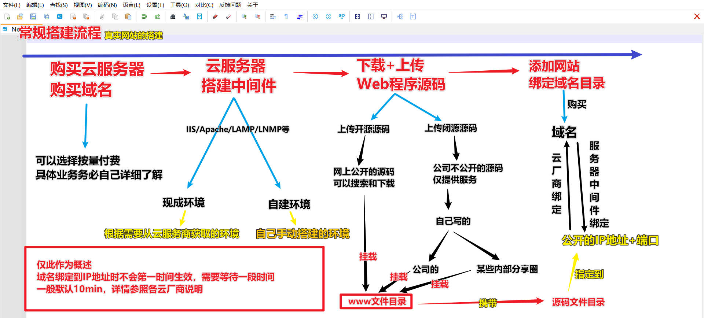
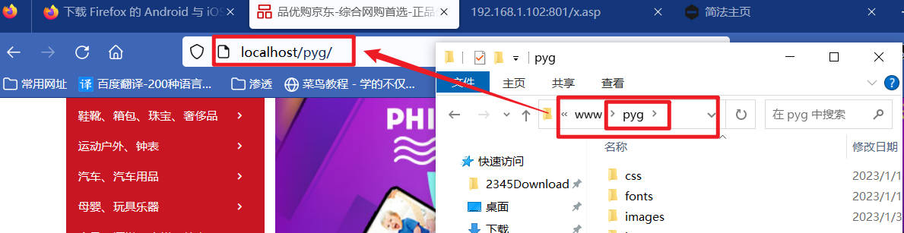

<!DOCTYPE html><html lang="zh-CN" data-theme="light"><head><meta charset="UTF-8"><meta http-equiv="X-UA-Compatible" content="IE=edge"><meta name="viewport" content="width=device-width, initial-scale=1.0, maximum-scale=1.0"><title>SEC学习2023版-0006-基础web篇-更迭 | 矢幽武博客</title><meta name="author" content="矢幽武"><meta name="copyright" content="矢幽武"><meta name="format-detection" content="telephone=no"><meta name="theme-color" content="#ffffff"><meta name="description" content="更迭警告：换视频资源">
<meta property="og:type" content="article">
<meta property="og:title" content="SEC学习2023版-0006-基础web篇-更迭">
<meta property="og:url" content="http://example.com/2023/03/17/SEC-Study-0006/index.html">
<meta property="og:site_name" content="矢幽武博客">
<meta property="og:description" content="更迭警告：换视频资源">
<meta property="og:locale" content="zh_CN">
<meta property="og:image" content="http://example.com/img/backgroude/b41.jpg">
<meta property="article:published_time" content="2023-03-17T09:31:52.000Z">
<meta property="article:modified_time" content="2023-04-16T10:04:12.993Z">
<meta property="article:author" content="矢幽武">
<meta property="article:tag" content="SEC">
<meta name="twitter:card" content="summary">
<meta name="twitter:image" content="http://example.com/img/backgroude/b41.jpg"><link rel="shortcut icon" href="/img/favicon.ico"><link rel="canonical" href="http://example.com/2023/03/17/SEC-Study-0006/index.html"><link rel="preconnect" href="//cdn.jsdelivr.net"/><link rel="preconnect" href="//busuanzi.ibruce.info"/><link rel="stylesheet" href="/css/index.css"><link rel="stylesheet" href="https://cdn.jsdelivr.net/npm/@fortawesome/fontawesome-free/css/all.min.css" media="print" onload="this.media='all'"><link rel="stylesheet" href="https://cdn.jsdelivr.net/npm/@fancyapps/ui/dist/fancybox.min.css" media="print" onload="this.media='all'"><script>const GLOBAL_CONFIG = { 
  root: '/',
  algolia: undefined,
  localSearch: {"path":"/search.xml","preload":true,"languages":{"hits_empty":"找不到您查询的内容：${query}"}},
  translate: undefined,
  noticeOutdate: undefined,
  highlight: {"plugin":"highlighjs","highlightCopy":true,"highlightLang":true,"highlightHeightLimit":false},
  copy: {
    success: '复制成功',
    error: '复制错误',
    noSupport: '浏览器不支持'
  },
  relativeDate: {
    homepage: false,
    post: false
  },
  runtime: '天',
  date_suffix: {
    just: '刚刚',
    min: '分钟前',
    hour: '小时前',
    day: '天前',
    month: '个月前'
  },
  copyright: undefined,
  lightbox: 'fancybox',
  Snackbar: undefined,
  source: {
    justifiedGallery: {
      js: 'https://cdn.jsdelivr.net/npm/flickr-justified-gallery/dist/fjGallery.min.js',
      css: 'https://cdn.jsdelivr.net/npm/flickr-justified-gallery/dist/fjGallery.min.css'
    }
  },
  isPhotoFigcaption: false,
  islazyload: false,
  isAnchor: false,
  percent: {
    toc: true,
    rightside: false,
  }
}</script><script id="config-diff">var GLOBAL_CONFIG_SITE = {
  title: 'SEC学习2023版-0006-基础web篇-更迭',
  isPost: true,
  isHome: false,
  isHighlightShrink: false,
  isToc: true,
  postUpdate: '2023-04-16 18:04:12'
}</script><noscript><style type="text/css">
  #nav {
    opacity: 1
  }
  .justified-gallery img {
    opacity: 1
  }

  #recent-posts time,
  #post-meta time {
    display: inline !important
  }
</style></noscript><script>(win=>{
    win.saveToLocal = {
      set: function setWithExpiry(key, value, ttl) {
        if (ttl === 0) return
        const now = new Date()
        const expiryDay = ttl * 86400000
        const item = {
          value: value,
          expiry: now.getTime() + expiryDay,
        }
        localStorage.setItem(key, JSON.stringify(item))
      },

      get: function getWithExpiry(key) {
        const itemStr = localStorage.getItem(key)

        if (!itemStr) {
          return undefined
        }
        const item = JSON.parse(itemStr)
        const now = new Date()

        if (now.getTime() > item.expiry) {
          localStorage.removeItem(key)
          return undefined
        }
        return item.value
      }
    }
  
    win.getScript = url => new Promise((resolve, reject) => {
      const script = document.createElement('script')
      script.src = url
      script.async = true
      script.onerror = reject
      script.onload = script.onreadystatechange = function() {
        const loadState = this.readyState
        if (loadState && loadState !== 'loaded' && loadState !== 'complete') return
        script.onload = script.onreadystatechange = null
        resolve()
      }
      document.head.appendChild(script)
    })
  
    win.getCSS = (url,id = false) => new Promise((resolve, reject) => {
      const link = document.createElement('link')
      link.rel = 'stylesheet'
      link.href = url
      if (id) link.id = id
      link.onerror = reject
      link.onload = link.onreadystatechange = function() {
        const loadState = this.readyState
        if (loadState && loadState !== 'loaded' && loadState !== 'complete') return
        link.onload = link.onreadystatechange = null
        resolve()
      }
      document.head.appendChild(link)
    })
  
      win.activateDarkMode = function () {
        document.documentElement.setAttribute('data-theme', 'dark')
        if (document.querySelector('meta[name="theme-color"]') !== null) {
          document.querySelector('meta[name="theme-color"]').setAttribute('content', '#0d0d0d')
        }
      }
      win.activateLightMode = function () {
        document.documentElement.setAttribute('data-theme', 'light')
        if (document.querySelector('meta[name="theme-color"]') !== null) {
          document.querySelector('meta[name="theme-color"]').setAttribute('content', '#ffffff')
        }
      }
      const t = saveToLocal.get('theme')
    
          if (t === 'dark') activateDarkMode()
          else if (t === 'light') activateLightMode()
        
      const asideStatus = saveToLocal.get('aside-status')
      if (asideStatus !== undefined) {
        if (asideStatus === 'hide') {
          document.documentElement.classList.add('hide-aside')
        } else {
          document.documentElement.classList.remove('hide-aside')
        }
      }
    
    const detectApple = () => {
      if(/iPad|iPhone|iPod|Macintosh/.test(navigator.userAgent)){
        document.documentElement.classList.add('apple')
      }
    }
    detectApple()
    })(window)</script><link rel="stylesheet" href="/css/background.css"><link rel="stylesheet" href="/css/mycss.css"><link rel="stylesheet" href="/css/universe.css"><link rel="stylesheet" href="/css/custom.css"  media="defer" onload="this.media='all'"><svg aria-hidden="true" style="position:absolute; overflow:hidden; width:0; height:0"><symbol id="icon-sun" viewBox="0 0 1024 1024"><path d="M960 512l-128 128v192h-192l-128 128-128-128H192v-192l-128-128 128-128V192h192l128-128 128 128h192v192z" fill="#FFD878" p-id="8420"></path><path d="M736 512a224 224 0 1 0-448 0 224 224 0 1 0 448 0z" fill="#FFE4A9" p-id="8421"></path><path d="M512 109.248L626.752 224H800v173.248L914.752 512 800 626.752V800h-173.248L512 914.752 397.248 800H224v-173.248L109.248 512 224 397.248V224h173.248L512 109.248M512 64l-128 128H192v192l-128 128 128 128v192h192l128 128 128-128h192v-192l128-128-128-128V192h-192l-128-128z" fill="#4D5152" p-id="8422"></path><path d="M512 320c105.888 0 192 86.112 192 192s-86.112 192-192 192-192-86.112-192-192 86.112-192 192-192m0-32a224 224 0 1 0 0 448 224 224 0 0 0 0-448z" fill="#4D5152" p-id="8423"></path></symbol><symbol id="icon-moon" viewBox="0 0 1024 1024"><path d="M611.370667 167.082667a445.013333 445.013333 0 0 1-38.4 161.834666 477.824 477.824 0 0 1-244.736 244.394667 445.141333 445.141333 0 0 1-161.109334 38.058667 85.077333 85.077333 0 0 0-65.066666 135.722666A462.08 462.08 0 1 0 747.093333 102.058667a85.077333 85.077333 0 0 0-135.722666 65.024z" fill="#FFB531" p-id="11345"></path><path d="M329.728 274.133333l35.157333-35.157333a21.333333 21.333333 0 1 0-30.165333-30.165333l-35.157333 35.157333-35.114667-35.157333a21.333333 21.333333 0 0 0-30.165333 30.165333l35.114666 35.157333-35.114666 35.157334a21.333333 21.333333 0 1 0 30.165333 30.165333l35.114667-35.157333 35.157333 35.157333a21.333333 21.333333 0 1 0 30.165333-30.165333z" fill="#030835" p-id="11346"></path></symbol></svg><!-- hexo injector head_end start --><link rel="stylesheet" href="https://cdn.cbd.int/hexo-butterfly-clock-anzhiyu/lib/clock.min.css" /><!-- hexo injector head_end end --><meta name="generator" content="Hexo 5.4.2"></head><body><div id="web_bg"></div><div id="sidebar"><div id="menu-mask"></div><div id="sidebar-menus"><div class="avatar-img is-center"></div><div class="sidebar-site-data site-data is-center"><a href="/archives/"><div class="headline">文章</div><div class="length-num">195</div></a><a href="/tags/"><div class="headline">标签</div><div class="length-num">51</div></a><a href="/categories/"><div class="headline">分类</div><div class="length-num">26</div></a></div><hr/><div class="menus_items"><div class="menus_item"><a class="site-page" href="/"><i class="fa-fw fas fa-home"></i><span> 主页</span></a></div><div class="menus_item"><a class="site-page group" href="javascript:void(0);"><i class="fa-fw fa fa-graduation-cap"></i><span> 导航</span><i class="fas fa-chevron-down"></i></a><ul class="menus_item_child"><li><a class="site-page child" href="/categories/"><i class="fa-fw fa fa-archive"></i><span> 分类</span></a></li><li><a class="site-page child" href="/tags/"><i class="fa-fw fa fa-tags"></i><span> 标签</span></a></li><li><a class="site-page child" href="/archives/"><i class="fa-fw fa fa-folder-open"></i><span> 归档</span></a></li></ul></div><div class="menus_item"><a class="site-page group" href="javascript:void(0);"><i class="fa-fw fas fa-list"></i><span> 资源</span><i class="fas fa-chevron-down"></i></a><ul class="menus_item_child"><li><a class="site-page child" href="/hack/"><i class="fa-fw fas fa-keyboard"></i><span> 暗链</span></a></li><li><a class="site-page child" href="/beout/"><i class="fa-fw fa fa-camera-retro"></i><span> 杂社</span></a></li><li><a class="site-page child" href="/target/"><i class="fa-fw fas fa-crosshairs"></i><span> 目标</span></a></li><li><a class="site-page child" href="/movies/"><i class="fa-fw fas fa-video"></i><span> 影视</span></a></li></ul></div><div class="menus_item"><a class="site-page" href="/links/"><i class="fa-fw fa fa-link"></i><span> 友链</span></a></div><div class="menus_item"><a class="site-page" href="/comment/"><i class="fa-fw fa fa-paper-plane"></i><span> 留言板</span></a></div><div class="menus_item"><a class="site-page" href="/about/"><i class="fa-fw fas fa-heart"></i><span> 关于笔者</span></a></div></div></div></div><div class="post" id="body-wrap"><header class="post-bg" id="page-header" style="background-image: url('/img/backgroude/b41.jpg')"><nav id="nav"><span id="blog-info"><a href="/" title="矢幽武博客"><span class="site-name">矢幽武博客</span></a></span><div id="menus"><div id="search-button"><a class="site-page social-icon search" href="javascript:void(0);"><i class="fas fa-search fa-fw"></i><span> 搜索</span></a></div><div class="menus_items"><div class="menus_item"><a class="site-page" href="/"><i class="fa-fw fas fa-home"></i><span> 主页</span></a></div><div class="menus_item"><a class="site-page group" href="javascript:void(0);"><i class="fa-fw fa fa-graduation-cap"></i><span> 导航</span><i class="fas fa-chevron-down"></i></a><ul class="menus_item_child"><li><a class="site-page child" href="/categories/"><i class="fa-fw fa fa-archive"></i><span> 分类</span></a></li><li><a class="site-page child" href="/tags/"><i class="fa-fw fa fa-tags"></i><span> 标签</span></a></li><li><a class="site-page child" href="/archives/"><i class="fa-fw fa fa-folder-open"></i><span> 归档</span></a></li></ul></div><div class="menus_item"><a class="site-page group" href="javascript:void(0);"><i class="fa-fw fas fa-list"></i><span> 资源</span><i class="fas fa-chevron-down"></i></a><ul class="menus_item_child"><li><a class="site-page child" href="/hack/"><i class="fa-fw fas fa-keyboard"></i><span> 暗链</span></a></li><li><a class="site-page child" href="/beout/"><i class="fa-fw fa fa-camera-retro"></i><span> 杂社</span></a></li><li><a class="site-page child" href="/target/"><i class="fa-fw fas fa-crosshairs"></i><span> 目标</span></a></li><li><a class="site-page child" href="/movies/"><i class="fa-fw fas fa-video"></i><span> 影视</span></a></li></ul></div><div class="menus_item"><a class="site-page" href="/links/"><i class="fa-fw fa fa-link"></i><span> 友链</span></a></div><div class="menus_item"><a class="site-page" href="/comment/"><i class="fa-fw fa fa-paper-plane"></i><span> 留言板</span></a></div><div class="menus_item"><a class="site-page" href="/about/"><i class="fa-fw fas fa-heart"></i><span> 关于笔者</span></a></div></div><div id="toggle-menu"><a class="site-page" href="javascript:void(0);"><i class="fas fa-bars fa-fw"></i></a></div></div></nav><div id="post-info"><h1 class="post-title">SEC学习2023版-0006-基础web篇-更迭</h1><div id="post-meta"><div class="meta-firstline"><span class="post-meta-date"><i class="far fa-calendar-alt fa-fw post-meta-icon"></i><span class="post-meta-label">发表于</span><time class="post-meta-date-created" datetime="2023-03-17T09:31:52.000Z" title="发表于 2023-03-17 17:31:52">2023-03-17</time><span class="post-meta-separator">|</span><i class="fas fa-history fa-fw post-meta-icon"></i><span class="post-meta-label">更新于</span><time class="post-meta-date-updated" datetime="2023-04-16T10:04:12.993Z" title="更新于 2023-04-16 18:04:12">2023-04-16</time></span><span class="post-meta-categories"><span class="post-meta-separator">|</span><i class="fas fa-inbox fa-fw post-meta-icon"></i><a class="post-meta-categories" href="/categories/%E7%BD%91%E7%BB%9C%E5%AE%89%E5%85%A8/">网络安全</a></span></div><div class="meta-secondline"><span class="post-meta-separator">|</span><span class="post-meta-wordcount"><i class="far fa-file-word fa-fw post-meta-icon"></i><span class="post-meta-label">字数总计:</span><span class="word-count">1.9k</span><span class="post-meta-separator">|</span><i class="far fa-clock fa-fw post-meta-icon"></i><span class="post-meta-label">阅读时长:</span><span>5分钟</span></span><span class="post-meta-separator">|</span><span class="post-meta-pv-cv" id="" data-flag-title="SEC学习2023版-0006-基础web篇-更迭"><i class="far fa-eye fa-fw post-meta-icon"></i><span class="post-meta-label">阅读量:</span><span id="busuanzi_value_page_pv"><i class="fa-solid fa-spinner fa-spin"></i></span></span></div></div></div></header><main class="layout" id="content-inner"><div id="post"><article class="post-content" id="article-container"><p><span style="color:red"> <strong>更迭警告：换视频资源</strong> </span></p>
<span id="more"></span>
<p>更迭警告：从这一期开始，将更改观看的视频资源为2022年版的<br>原因：</p>
<ul>
<li>2022年版比较贴近当下，2018年版有点过时了</li>
<li>2022年版资源充足</li>
</ul>
<p>虽然换来换去很是不好，但如果能更加贴合时代发展，就意味着能更好的适应社会。况且B站的资源是有残缺的，所以……<br>害，我的几千块呐……！拼了！</p>
<p><strong>大前提</strong> ： <span style="color:red"> <strong>任何有点沾公网的操作都应该选择去网上查查，而不是直接在公网上手各种操作！</strong> </span></p>
<p><span style="color:red;font-size:8px"> <strong>做事不谨慎，牢饭管到饱……</strong> </span></p>
<h1 id="001-基础入门-蓝图"><a href="#001-基础入门-蓝图" class="headerlink" title="001-基础入门-蓝图"></a>001-基础入门-蓝图</h1><h2 id="知识点"><a href="#知识点" class="headerlink" title="知识点"></a>知识点</h2><ol>
<li>Web常规-系统&amp;中间件&amp;数据库&amp;源码等</li>
<li>Web其他-前后端&amp;软件&amp;Docker&amp;分配站等</li>
<li>Web拓展-CDN&amp;WAF&amp;OSS&amp;静态&amp;负载均衡等</li>
</ol>
<h2 id="章节点"><a href="#章节点" class="headerlink" title="章节点"></a>章节点</h2><ul>
<li>应用架构：Web/APP/云应用/三方服务/负载均衡等</li>
<li>安全产品：CDN/WAF/IDS/IPS/蜜罐/防火墙/杀毒等</li>
<li>渗透命令：文件上传下载/端口服务/Shell反弹等</li>
<li>抓包技术：HTTP/TCP/UDP/ICMP/DNS/封包/代理等</li>
<li>算法加密：数据编码/密码算法/密码保护/反编译/加壳等</li>
</ul>
<h1 id="网站搭建"><a href="#网站搭建" class="headerlink" title="网站搭建"></a>网站搭建</h1><h2 id="Web常规-系统-中间件-数据库-源码等"><a href="#Web常规-系统-中间件-数据库-源码等" class="headerlink" title="Web常规-系统+中间件+数据库+源码等"></a>Web常规-系统+中间件+数据库+源码等</h2><p>常规的Web应用搭建(真实网站的搭建)<br>原理：源码和数据库在同一个服务器上面。</p>
<p>子域名-端口站-目录站<br></p>
<h2 id="Web其他-前后端-集成软件-Docker-分配站等"><a href="#Web其他-前后端-集成软件-Docker-分配站等" class="headerlink" title="Web其他-前后端+集成软件+Docker+分配站等"></a>Web其他-前后端+集成软件+Docker+分配站等</h2><h3 id="分配站"><a href="#分配站" class="headerlink" title="分配站"></a>分配站</h3><p>依托性网站：依靠 <strong>别人分配</strong> 的 <strong>空间</strong> 和 <strong>域名</strong> 的网站</p>
<p>安全测试点：针对分配站的域名进行测试。寻常情况安全系数高。分配站有些为公司所有。</p>
<h3 id="集成软件式"><a href="#集成软件式" class="headerlink" title="集成软件式"></a>集成软件式</h3><p>继承一体化安装：一站式部署，简单便捷。</p>
<p>例如宝塔，phpstudy。</p>
<p>Docker：一种云容器。</p>
<h2 id="Web拓展-CDN-WAF-OSS-静态-负载均衡等"><a href="#Web拓展-CDN-WAF-OSS-静态-负载均衡等" class="headerlink" title="Web拓展-CDN+WAF+OSS+静态+负载均衡等"></a>Web拓展-CDN+WAF+OSS+静态+负载均衡等</h2><p>站库分离：源码和数据库不在同一个服务器上。</p>
<ul>
<li>CDN : 节点分发，从主服务器当中缓存数据到CDN节点，方便访问。使用CDN会掩盖真实ip，如果可能的话使用某些方法获取CDN的解析记录获取真实IP地址的话……</li>
<li>WAF : web防火墙</li>
<li>OSS : 对象存储服务，管理内容，没有可执行权限。</li>
<li>静态: 不需要服务器处理，客户端直接访问。</li>
<li>负载均衡: 将请求负载平均分配到各服务器节点上。</li>
</ul>
<h1 id="原域名和子域名的理解"><a href="#原域名和子域名的理解" class="headerlink" title="原域名和子域名的理解"></a>原域名和子域名的理解</h1><p><strong>网站：</strong> <a target="_blank" rel="noopener" href="http://www.baidu.com/">www.baidu.com</a><br><strong>原域名</strong> : 云厂商获得，购买即指定，如: baidu.com。也称为一级域名(有些人习惯将其当中一个整体，所以称为一级域名)<br><strong>子域名</strong> : 子域名可以自己设置，例如“www.”，“tieba”。</p>
<h1 id="网站的几种访问模式"><a href="#网站的几种访问模式" class="headerlink" title="网站的几种访问模式"></a>网站的几种访问模式</h1><h2 id="子域名模式"><a href="#子域名模式" class="headerlink" title="子域名模式"></a>子域名模式</h2><p><span style="color:red"> <strong>各个子域名可以指定不同的运行程序。</strong> </span></p>
<p>例如：</p>
<ul>
<li>“www”指向zblog程序，完整访问写法就是：<a target="_blank" rel="noopener" href="http://www.baidu.com/">www.baidu.com</a></li>
<li>“tieba”指向wordpress程序，完整的写法就是：tieba.baidu.com</li>
</ul>
<p>两者处理起来相互之间不会有任何影响，两者是 <strong>互相分开，独立运行</strong> 的。( <strong>域名扫描</strong> )</p>
<h2 id="端口模式"><a href="#端口模式" class="headerlink" title="端口模式"></a>端口模式</h2><p><span style="color:red"> <strong>相同的域名，不一样的端口能访问出多个网站.</strong> </span> ( <strong>端口扫描</strong> )</p>
<p>举个例子：</p>
<ul>
<li><a target="_blank" rel="noopener" href="http://www.baidu.com/">www.baidu.com:80</a></li>
<li><a target="_blank" rel="noopener" href="http://www.baidu.com:9800/">www.baidu.com:9800</a></li>
</ul>
<h2 id="目录模式"><a href="#目录模式" class="headerlink" title="目录模式"></a>目录模式</h2><p>访问方法：http://(域名/ip地址)/文件路径</p>
<p>这是wampserver常见到的类型。</p>
<p>1.IP地址的形式</p>
<p>下图是直接在浏览器使用localhost+路径直接访问网站源码的。<br><br>安全风险：可以通过切换到localhost访问根目录下所有的文件。</p>
<p>2.域名的形式</p>
<p>形如：<a target="_blank" rel="noopener" href="http://www.baidu.com/pyg">www.baidu.com/pyg</a></p>
<h1 id="源码"><a href="#源码" class="headerlink" title="源码"></a>源码</h1><h2 id="源码结构"><a href="#源码结构" class="headerlink" title="源码结构"></a>源码结构</h2><p>了解源码的结构有助于我们后续做测试。</p>
<ul>
<li>数据库目录</li>
<li>后台目录</li>
<li>文件目录</li>
</ul>
<h2 id="源码类型"><a href="#源码类型" class="headerlink" title="源码类型"></a>源码类型</h2><p><span style="color:red"> <strong>白盒测试</strong> - <strong>代码审计</strong> </span> - 源码</p>
<h3 id="开源"><a href="#开源" class="headerlink" title="开源"></a>开源</h3><p><strong>概念</strong> ：网上免费公开的程序源码，安全系数低。</p>
<p>应用场景：自己搭建的博客源码，门户网站等。</p>
<p><strong>分类</strong> ：</p>
<ul>
<li>源码可见</li>
<li>源码不可见：<ul>
<li>加密<ul>
<li>asp(少)/php(主流)/java(主流)</li>
<li>不影响本身的功能</li>
<li>源码以乱码展示</li>
</ul>
</li>
<li>语言特性决定的<ul>
<li>Java文件运行时，从“.java”变为“.class”,文件内容会改变</li>
<li>意思是：下载下来的网站源码与它后台的网站源码不一样。</li>
<li>可下载，但内容不可见</li>
</ul>
</li>
</ul>
</li>
</ul>
<h3 id="商业-闭源"><a href="#商业-闭源" class="headerlink" title="商业(闭源)"></a>商业(闭源)</h3><p>概念：</p>
<ul>
<li>提供程序，不提供源代码。</li>
<li>公司团队自己做的一套程序。</li>
<li>不卖源代码卖服务，安全系数高。</li>
</ul>
<p>大公司会使用自己的源码，避免因为开源程序被入侵等。</p>
<p>辨别开源与闭源有助于SRC的挖掘。</p>
<h3 id="自用"><a href="#自用" class="headerlink" title="自用"></a>自用</h3><p>自己开发自己用，不提供给别人。</p>
<h2 id="路由访问控制"><a href="#路由访问控制" class="headerlink" title="路由访问控制"></a>路由访问控制</h2><h3 id="常规访问"><a href="#常规访问" class="headerlink" title="常规访问"></a>常规访问</h3><p>URL和文件目录对应得上。</p>
<p>根据网站目录，访问该网站目录下某个文件路径的文件。文件在目录下，可以直接访问到。</p>
<p>访问的方式分为 <strong>绝对路径</strong> 和 <strong>相对路径</strong> ，至于这两者的概念，不赘述。</p>
<h3 id="路由访问"><a href="#路由访问" class="headerlink" title="路由访问"></a>路由访问</h3><ul>
<li>URL和文件目录对应不上，要根据 <strong>配置路由</strong> 决定。</li>
<li>mvc源码，java，python</li>
<li>文件在目录下，你却访问不到。</li>
<li>在特定的路由下触发特定的文件(后门)</li>
</ul>
<h1 id="访问控制-中间件"><a href="#访问控制-中间件" class="headerlink" title="访问控制(中间件)"></a>访问控制(中间件)</h1><p>下面两者都会限制安全测试，不能绕过，遇到就只能找其他办法/突破口。</p>
<h2 id="权限控制"><a href="#权限控制" class="headerlink" title="权限控制"></a>权限控制</h2><p>iis的Mime类型：设置文件的解析类型，使文件能正常的被解析为对应格式的文件进行展现。</p>
<p>举个例子：访问index.php出现的是对应的php页面而不是下载文件，就说明了“.php”文件能被正常解析。而出现直接下载php文件的情况，就是文件未被正常解析。</p>
<h2 id="目录权限"><a href="#目录权限" class="headerlink" title="目录权限"></a>目录权限</h2><p>脚本所在目录是否有脚本的执行权限。</p>
<p>例如：在某文件目录下有asp解析权限，那么该目录大概率可以插入一句话的asp木马。</p>
<h2 id="身份认证"><a href="#身份认证" class="headerlink" title="身份认证"></a>身份认证</h2><p>身份认证，是指访问网站时需要登录账户才能访问。</p>
<p>类似于那种弹出窗口，强制你登录后才能访问的那种网站。</p>
<h1 id="数据库"><a href="#数据库" class="headerlink" title="数据库"></a>数据库</h1><p>数据库配置文件–可以使用Office自带的数据库软件打开</p>
<h2 id="本地一致"><a href="#本地一致" class="headerlink" title="本地一致"></a>本地一致</h2><p>数据库文件与源码文件存储在同一个源码文件夹下。</p>
<p>数据库文件一般为“***app.config”.</p>
<h2 id="站库分离"><a href="#站库分离" class="headerlink" title="站库分离"></a>站库分离</h2><p>数据库文件与源码文件互相分离。</p>
<p>实现方式：</p>
<ul>
<li>云数据库应用<ul>
<li>在特定专门用于存储数据库的平台存储数据。</li>
<li>安全系数高，防护好，可以控制ip/设备的访问，即便是账密泄露也无法被登录。</li>
</ul>
</li>
<li>另一台云服务器的数据库<ul>
<li>在服务器的基础上再搭建一个存储数据的数据库。</li>
</ul>
</li>
</ul>
<h1 id="梗概"><a href="#梗概" class="headerlink" title="梗概"></a>梗概</h1><h2 id="资产架构："><a href="#资产架构：" class="headerlink" title="资产架构："></a>资产架构：</h2><p>WEB单个源码指向安全<br>WEB多个目录源码安全<br>WEB多个端口源码安全<br>服务器架设多个站点安全<br>架设第三方插件接口安全<br>服务器架设多个应用安全</p>
<h2 id="番外安全："><a href="#番外安全：" class="headerlink" title="番外安全："></a>番外安全：</h2><p>基于域名解析安全<br>基于服务器本身安全<br>基于服务商信息安全<br>基于管理个人的安全</p>
<h2 id="考虑阻碍："><a href="#考虑阻碍：" class="headerlink" title="考虑阻碍："></a>考虑阻碍：</h2><p>阻碍-站库分离<br>阻碍-CDN加速服务<br>阻碍-负载均衡服务<br>阻碍-WAF应用防火墙<br>阻碍-主机防护防火墙</p>
<!-- 
网站有一个数据库配置文件，且此配置文件会总的进行资源调度，例如用户，密码，连接主数据库的配置等。

站库分离：网站源码和数据库是分离的 -》 z-blog的SQL创建，不是MSSQL的那种。

数据库配置文件：类似于“xxxapp.config”
站库分离，可以单独的购买数据库服务，更加安全（绑定IP地址，限制IP访问等），这样即便有账户也登录不上。

对象存储服务器OSS：文件上传等都存储到OSS当中，OSS只做存储，不做解析(一般情况下是这样的)，上传脚本也没有用。

后面信息收集的东西：针对目标，判断是什么类型，根据类型寻找突破口。

源码结构

理解网站的结构，也就是网站源代码各个目录代表什么意思。 -->


</article><div class="post-copyright"><div class="post-copyright__author"><span class="post-copyright-meta">文章作者: </span><span class="post-copyright-info"><a href="http://example.com">矢幽武</a></span></div><div class="post-copyright__type"><span class="post-copyright-meta">文章链接: </span><span class="post-copyright-info"><a href="http://example.com/2023/03/17/SEC-Study-0006/">http://example.com/2023/03/17/SEC-Study-0006/</a></span></div><div class="post-copyright__notice"><span class="post-copyright-meta">版权声明: </span><span class="post-copyright-info">本博客所有文章除特别声明外，均采用 <a href="https://creativecommons.org/licenses/by-nc-sa/4.0/" target="_blank">CC BY-NC-SA 4.0</a> 许可协议。转载请注明来自 <a href="http://example.com" target="_blank">矢幽武博客</a>！</span></div></div><div class="tag_share"><div class="post-meta__tag-list"><a class="post-meta__tags" href="/tags/SEC/">SEC</a></div><div class="post_share"><div class="social-share" data-image="/img/backgroude/b41.jpg" data-sites="wechat,weibo,qq"></div><link rel="stylesheet" href="https://cdn.jsdelivr.net/npm/butterfly-extsrc/sharejs/dist/css/share.min.css" media="print" onload="this.media='all'"><script src="https://cdn.jsdelivr.net/npm/butterfly-extsrc/sharejs/dist/js/social-share.min.js" defer></script></div></div><div class="post-reward"><div class="reward-button"><i class="fas fa-qrcode"></i> 打赏</div><div class="reward-main"><ul class="reward-all"><li class="reward-item"><a href="/img/wechat.jpg" target="_blank"></a><div class="post-qr-code-desc">wechat</div></li><li class="reward-item"><a href="/img/alipay.jpg" target="_blank"></a><div class="post-qr-code-desc">alipay</div></li></ul></div></div><nav class="pagination-post" id="pagination"><div class="prev-post pull-left"><a href="/2023/03/18/SEC-tool-0002/" title="SEC-IIS搭建ASP支持+数据库支持(本地access)"><div class="pagination-info"><div class="label">上一篇</div><div class="prev_info">SEC-IIS搭建ASP支持+数据库支持(本地access)</div></div></a></div><div class="next-post pull-right"><a href="/2023/03/16/Linux-Server-Study-004/" title="Linux-Server-Study-004"><div class="pagination-info"><div class="label">下一篇</div><div class="next_info">Linux-Server-Study-004</div></div></a></div></nav><div class="relatedPosts"><div class="headline"><i class="fas fa-thumbs-up fa-fw"></i><span>相关推荐</span></div><div class="relatedPosts-list"><div><a href="/2023/09/04/SEC-Study-0085/" title="SEC-2022版-0054-APP攻防-2-Xposed&amp;Frida&amp;Hook&amp;证书校验&amp;反代理&amp;代理转发"><div class="content is-center"><div class="date"><i class="far fa-calendar-alt fa-fw"></i> 2023-09-04</div><div class="title">SEC-2022版-0054-APP攻防-2-Xposed&amp;Frida&amp;Hook&amp;证书校验&amp;反代理&amp;代理转发</div></div></a></div><div><a href="/2023/09/03/SEC-Study-0084/" title="SEC-2022版-0053-APP攻防-1-Frida反证书抓包&amp;移动安全系统&amp;资产提取&amp;评估扫描"><div class="content is-center"><div class="date"><i class="far fa-calendar-alt fa-fw"></i> 2023-09-03</div><div class="title">SEC-2022版-0053-APP攻防-1-Frida反证书抓包&amp;移动安全系统&amp;资产提取&amp;评估扫描</div></div></a></div><div><a href="/2023/09/02/SEC-Study-0083/" title="SEC-2022版-0052-API攻防-2-接口安全&amp;阿里云KEY&amp;Postman&amp;XXE&amp;DVWS&amp;鉴权&amp;泄漏"><div class="content is-center"><div class="date"><i class="far fa-calendar-alt fa-fw"></i> 2023-09-02</div><div class="title">SEC-2022版-0052-API攻防-2-接口安全&amp;阿里云KEY&amp;Postman&amp;XXE&amp;DVWS&amp;鉴权&amp;泄漏</div></div></a></div><div><a href="/2023/08/10/SEC-Study-0081/" title="SEC-2022版-0051-服务攻防-10-框架安全&amp;CVE复现&amp;Apache Shiro&amp;Apache Solr"><div class="content is-center"><div class="date"><i class="far fa-calendar-alt fa-fw"></i> 2023-08-10</div><div class="title">SEC-2022版-0051-服务攻防-10-框架安全&amp;CVE复现&amp;Apache Shiro&amp;Apache Solr</div></div></a></div><div><a href="/2023/08/10/SEC-Study-0082/" title="SEC-2022版-0051-API攻防-1-接口安全&amp;WebPack&amp;REST&amp;SOAP&amp;WSDL&amp;WebService"><div class="content is-center"><div class="date"><i class="far fa-calendar-alt fa-fw"></i> 2023-08-10</div><div class="title">SEC-2022版-0051-API攻防-1-接口安全&amp;WebPack&amp;REST&amp;SOAP&amp;WSDL&amp;WebService</div></div></a></div><div><a href="/2023/08/06/SEC-Study-0080/" title="SEC-2022版-0050-服务攻防-09-框架安全&amp;CVE复现&amp;Django&amp;Flask&amp;Node.JS&amp;JQuery"><div class="content is-center"><div class="date"><i class="far fa-calendar-alt fa-fw"></i> 2023-08-06</div><div class="title">SEC-2022版-0050-服务攻防-09-框架安全&amp;CVE复现&amp;Django&amp;Flask&amp;Node.JS&amp;JQuery</div></div></a></div></div></div><hr/><div id="post-comment"><div class="comment-head"><div class="comment-headline"><i class="fas fa-comments fa-fw"></i><span> 评论</span></div></div><div class="comment-wrap"><div><div id="twikoo-wrap"></div></div></div></div></div><div class="aside-content" id="aside-content"><div class="card-widget card-info"><div class="is-center"><div class="avatar-img"></div><div class="author-info__name">矢幽武</div><div class="author-info__description">生灵造物，百力奋心<br>机遇自争，各凭本事<br>没有攻不破的系统 ，<br> 只有不努力的黑客</div></div><div class="card-info-data site-data is-center"><a href="/archives/"><div class="headline">文章</div><div class="length-num">195</div></a><a href="/tags/"><div class="headline">标签</div><div class="length-num">51</div></a><a href="/categories/"><div class="headline">分类</div><div class="length-num">26</div></a></div><a id="card-info-btn" target="_blank" rel="noopener" href="https://github.com/linxiao-wangchuan"><i class="fab fa-github"></i><span>Follow Me</span></a></div><div class="card-widget card-announcement"><div class="item-headline"><i class="fas fa-bullhorn fa-shake"></i><span>公告</span></div><div class="announcement_content"><b><font color="#e66b6d">威</font> <font color="#e66d98">武</font> <font color="#e66cc6">不</font> <font color="#cc6de6">屈</font> ,<font color="#9770e6">成</font> <font color="#6d93e6">为</font> <font color="#6fcde6">自</font> <font color="#72e6b6">己</font> <font color="#72e689">不败的</font> <font color="#99e670">信条</font>, <font color="#cde670">剑</font> <font color="#e6df72">走</font> <font color="#e6c073">偏</font> <font color="#e6a271">锋</font> ,<font color="#e6796f">缥</font> <font color="#e65454">缈</font> <font color="#e63333">孤</font> <font color="#e62c2c">鸿</font> <font color="#e60101">影</font> <font color="#e60101"> --孤志</font></b> <p align="center"></p> <p align="center" style="color:yellow;font-weight:800">微信号：无</p> <p align="center" style="color:red;font-weight:800">QQ：无</p> -------------------------------- <p style="color:#5a1216;font-weight:800">每日更新指南：</p> <p style="color:#4d1018;font-weight:800">刷题/记录总知识一般会沿用上次的文档</p> <p style="color:#f03752;font-weight:800">学习新知将新开文档</p></div></div><div class="xpand" style="height:10px;"></div><canvas class="illo" width="800" height="800" style="max-width: 200px; max-height: 200px; touch-action: none; width: 640px; height: 640px;"></canvas><script src="https://fastly.jsdelivr.net/gh/xiaopengand/blogCdn@latest/xzxr/twopeople1.js"></script><script src="https://fastly.jsdelivr.net/gh/xiaopengand/blogCdn@latest/xzxr/zdog.dist.js"></script><script id="rendered-js" src="https://fastly.jsdelivr.net/gh/xiaopengand/blogCdn@latest/xzxr/twopeople.js"></script><style>.card-widget.card-announcement {
margin: 0;
align-items: center;
justify-content: center;
text-align: center;
}
canvas {
display: block;
margin: 0 auto;
cursor: move;
}</style><div class="sticky_layout"><div class="card-widget" id="card-toc"><div class="item-headline"><i class="fas fa-stream"></i><span>目录</span><span class="toc-percentage"></span></div><div class="toc-content"><ol class="toc"><li class="toc-item toc-level-1"><a class="toc-link" href="#001-%E5%9F%BA%E7%A1%80%E5%85%A5%E9%97%A8-%E8%93%9D%E5%9B%BE"><span class="toc-number">1.</span> <span class="toc-text">001-基础入门-蓝图</span></a><ol class="toc-child"><li class="toc-item toc-level-2"><a class="toc-link" href="#%E7%9F%A5%E8%AF%86%E7%82%B9"><span class="toc-number">1.1.</span> <span class="toc-text">知识点</span></a></li><li class="toc-item toc-level-2"><a class="toc-link" href="#%E7%AB%A0%E8%8A%82%E7%82%B9"><span class="toc-number">1.2.</span> <span class="toc-text">章节点</span></a></li></ol></li><li class="toc-item toc-level-1"><a class="toc-link" href="#%E7%BD%91%E7%AB%99%E6%90%AD%E5%BB%BA"><span class="toc-number">2.</span> <span class="toc-text">网站搭建</span></a><ol class="toc-child"><li class="toc-item toc-level-2"><a class="toc-link" href="#Web%E5%B8%B8%E8%A7%84-%E7%B3%BB%E7%BB%9F-%E4%B8%AD%E9%97%B4%E4%BB%B6-%E6%95%B0%E6%8D%AE%E5%BA%93-%E6%BA%90%E7%A0%81%E7%AD%89"><span class="toc-number">2.1.</span> <span class="toc-text">Web常规-系统+中间件+数据库+源码等</span></a></li><li class="toc-item toc-level-2"><a class="toc-link" href="#Web%E5%85%B6%E4%BB%96-%E5%89%8D%E5%90%8E%E7%AB%AF-%E9%9B%86%E6%88%90%E8%BD%AF%E4%BB%B6-Docker-%E5%88%86%E9%85%8D%E7%AB%99%E7%AD%89"><span class="toc-number">2.2.</span> <span class="toc-text">Web其他-前后端+集成软件+Docker+分配站等</span></a><ol class="toc-child"><li class="toc-item toc-level-3"><a class="toc-link" href="#%E5%88%86%E9%85%8D%E7%AB%99"><span class="toc-number">2.2.1.</span> <span class="toc-text">分配站</span></a></li><li class="toc-item toc-level-3"><a class="toc-link" href="#%E9%9B%86%E6%88%90%E8%BD%AF%E4%BB%B6%E5%BC%8F"><span class="toc-number">2.2.2.</span> <span class="toc-text">集成软件式</span></a></li></ol></li><li class="toc-item toc-level-2"><a class="toc-link" href="#Web%E6%8B%93%E5%B1%95-CDN-WAF-OSS-%E9%9D%99%E6%80%81-%E8%B4%9F%E8%BD%BD%E5%9D%87%E8%A1%A1%E7%AD%89"><span class="toc-number">2.3.</span> <span class="toc-text">Web拓展-CDN+WAF+OSS+静态+负载均衡等</span></a></li></ol></li><li class="toc-item toc-level-1"><a class="toc-link" href="#%E5%8E%9F%E5%9F%9F%E5%90%8D%E5%92%8C%E5%AD%90%E5%9F%9F%E5%90%8D%E7%9A%84%E7%90%86%E8%A7%A3"><span class="toc-number">3.</span> <span class="toc-text">原域名和子域名的理解</span></a></li><li class="toc-item toc-level-1"><a class="toc-link" href="#%E7%BD%91%E7%AB%99%E7%9A%84%E5%87%A0%E7%A7%8D%E8%AE%BF%E9%97%AE%E6%A8%A1%E5%BC%8F"><span class="toc-number">4.</span> <span class="toc-text">网站的几种访问模式</span></a><ol class="toc-child"><li class="toc-item toc-level-2"><a class="toc-link" href="#%E5%AD%90%E5%9F%9F%E5%90%8D%E6%A8%A1%E5%BC%8F"><span class="toc-number">4.1.</span> <span class="toc-text">子域名模式</span></a></li><li class="toc-item toc-level-2"><a class="toc-link" href="#%E7%AB%AF%E5%8F%A3%E6%A8%A1%E5%BC%8F"><span class="toc-number">4.2.</span> <span class="toc-text">端口模式</span></a></li><li class="toc-item toc-level-2"><a class="toc-link" href="#%E7%9B%AE%E5%BD%95%E6%A8%A1%E5%BC%8F"><span class="toc-number">4.3.</span> <span class="toc-text">目录模式</span></a></li></ol></li><li class="toc-item toc-level-1"><a class="toc-link" href="#%E6%BA%90%E7%A0%81"><span class="toc-number">5.</span> <span class="toc-text">源码</span></a><ol class="toc-child"><li class="toc-item toc-level-2"><a class="toc-link" href="#%E6%BA%90%E7%A0%81%E7%BB%93%E6%9E%84"><span class="toc-number">5.1.</span> <span class="toc-text">源码结构</span></a></li><li class="toc-item toc-level-2"><a class="toc-link" href="#%E6%BA%90%E7%A0%81%E7%B1%BB%E5%9E%8B"><span class="toc-number">5.2.</span> <span class="toc-text">源码类型</span></a><ol class="toc-child"><li class="toc-item toc-level-3"><a class="toc-link" href="#%E5%BC%80%E6%BA%90"><span class="toc-number">5.2.1.</span> <span class="toc-text">开源</span></a></li><li class="toc-item toc-level-3"><a class="toc-link" href="#%E5%95%86%E4%B8%9A-%E9%97%AD%E6%BA%90"><span class="toc-number">5.2.2.</span> <span class="toc-text">商业(闭源)</span></a></li><li class="toc-item toc-level-3"><a class="toc-link" href="#%E8%87%AA%E7%94%A8"><span class="toc-number">5.2.3.</span> <span class="toc-text">自用</span></a></li></ol></li><li class="toc-item toc-level-2"><a class="toc-link" href="#%E8%B7%AF%E7%94%B1%E8%AE%BF%E9%97%AE%E6%8E%A7%E5%88%B6"><span class="toc-number">5.3.</span> <span class="toc-text">路由访问控制</span></a><ol class="toc-child"><li class="toc-item toc-level-3"><a class="toc-link" href="#%E5%B8%B8%E8%A7%84%E8%AE%BF%E9%97%AE"><span class="toc-number">5.3.1.</span> <span class="toc-text">常规访问</span></a></li><li class="toc-item toc-level-3"><a class="toc-link" href="#%E8%B7%AF%E7%94%B1%E8%AE%BF%E9%97%AE"><span class="toc-number">5.3.2.</span> <span class="toc-text">路由访问</span></a></li></ol></li></ol></li><li class="toc-item toc-level-1"><a class="toc-link" href="#%E8%AE%BF%E9%97%AE%E6%8E%A7%E5%88%B6-%E4%B8%AD%E9%97%B4%E4%BB%B6"><span class="toc-number">6.</span> <span class="toc-text">访问控制(中间件)</span></a><ol class="toc-child"><li class="toc-item toc-level-2"><a class="toc-link" href="#%E6%9D%83%E9%99%90%E6%8E%A7%E5%88%B6"><span class="toc-number">6.1.</span> <span class="toc-text">权限控制</span></a></li><li class="toc-item toc-level-2"><a class="toc-link" href="#%E7%9B%AE%E5%BD%95%E6%9D%83%E9%99%90"><span class="toc-number">6.2.</span> <span class="toc-text">目录权限</span></a></li><li class="toc-item toc-level-2"><a class="toc-link" href="#%E8%BA%AB%E4%BB%BD%E8%AE%A4%E8%AF%81"><span class="toc-number">6.3.</span> <span class="toc-text">身份认证</span></a></li></ol></li><li class="toc-item toc-level-1"><a class="toc-link" href="#%E6%95%B0%E6%8D%AE%E5%BA%93"><span class="toc-number">7.</span> <span class="toc-text">数据库</span></a><ol class="toc-child"><li class="toc-item toc-level-2"><a class="toc-link" href="#%E6%9C%AC%E5%9C%B0%E4%B8%80%E8%87%B4"><span class="toc-number">7.1.</span> <span class="toc-text">本地一致</span></a></li><li class="toc-item toc-level-2"><a class="toc-link" href="#%E7%AB%99%E5%BA%93%E5%88%86%E7%A6%BB"><span class="toc-number">7.2.</span> <span class="toc-text">站库分离</span></a></li></ol></li><li class="toc-item toc-level-1"><a class="toc-link" href="#%E6%A2%97%E6%A6%82"><span class="toc-number">8.</span> <span class="toc-text">梗概</span></a><ol class="toc-child"><li class="toc-item toc-level-2"><a class="toc-link" href="#%E8%B5%84%E4%BA%A7%E6%9E%B6%E6%9E%84%EF%BC%9A"><span class="toc-number">8.1.</span> <span class="toc-text">资产架构：</span></a></li><li class="toc-item toc-level-2"><a class="toc-link" href="#%E7%95%AA%E5%A4%96%E5%AE%89%E5%85%A8%EF%BC%9A"><span class="toc-number">8.2.</span> <span class="toc-text">番外安全：</span></a></li><li class="toc-item toc-level-2"><a class="toc-link" href="#%E8%80%83%E8%99%91%E9%98%BB%E7%A2%8D%EF%BC%9A"><span class="toc-number">8.3.</span> <span class="toc-text">考虑阻碍：</span></a></li></ol></li></ol></div></div><div class="card-widget card-recent-post"><div class="item-headline"><i class="fas fa-history"></i><span>最新文章</span></div><div class="aside-list"><div class="aside-list-item"><a class="thumbnail" href="/2024/01/06/SEC-tool-0007/" title="SEC-工具-认识kali部分工具"></a><div class="content"><a class="title" href="/2024/01/06/SEC-tool-0007/" title="SEC-工具-认识kali部分工具">SEC-工具-认识kali部分工具</a><time datetime="2024-01-06T02:12:32.000Z" title="发表于 2024-01-06 10:12:32">2024-01-06</time></div></div><div class="aside-list-item"><a class="thumbnail" href="/2024/01/05/Linux-Server-Study-005/" title="kali虚拟机网卡配置"></a><div class="content"><a class="title" href="/2024/01/05/Linux-Server-Study-005/" title="kali虚拟机网卡配置">kali虚拟机网卡配置</a><time datetime="2024-01-05T06:15:45.000Z" title="发表于 2024-01-05 14:15:45">2024-01-05</time></div></div><div class="aside-list-item"><a class="thumbnail" href="/2023/12/19/Interview-0001/" title="面试学习-渗透测试"></a><div class="content"><a class="title" href="/2023/12/19/Interview-0001/" title="面试学习-渗透测试">面试学习-渗透测试</a><time datetime="2023-12-19T06:27:03.000Z" title="发表于 2023-12-19 14:27:03">2023-12-19</time></div></div><div class="aside-list-item"><a class="thumbnail" href="/2023/11/29/CTF-web-035/" title="CTF之Web习题--033--某赛题"></a><div class="content"><a class="title" href="/2023/11/29/CTF-web-035/" title="CTF之Web习题--033--某赛题">CTF之Web习题--033--某赛题</a><time datetime="2023-11-29T00:19:08.000Z" title="发表于 2023-11-29 08:19:08">2023-11-29</time></div></div><div class="aside-list-item"><a class="thumbnail" href="/2023/10/13/CTF-web-book-003/" title="CTF之Web总结--协议/系统/环境"></a><div class="content"><a class="title" href="/2023/10/13/CTF-web-book-003/" title="CTF之Web总结--协议/系统/环境">CTF之Web总结--协议/系统/环境</a><time datetime="2023-10-13T14:19:08.000Z" title="发表于 2023-10-13 22:19:08">2023-10-13</time></div></div></div></div></div></div></main><footer id="footer"><div id="footer-wrap"><div class="copyright">&copy;2020 - 2024 By 矢幽武</div><div class="framework-info"><span>框架 </span><a target="_blank" rel="noopener" href="https://hexo.io">Hexo</a><span class="footer-separator">|</span><span>主题 </span><a target="_blank" rel="noopener" href="https://github.com/jerryc127/hexo-theme-butterfly">Butterfly</a></div></div></footer></div><div id="rightside"><div id="rightside-config-hide"><button id="readmode" type="button" title="阅读模式"><i class="fas fa-book-open"></i></button><button id="darkmode" type="button" title="浅色和深色模式转换"><i class="fas fa-adjust"></i></button><a class="icon-V hidden" onclick="switchNightMode()" title="浅色和深色模式转换"><svg width="25" height="25" viewBox="0 0 1024 1024"><use id="modeicon" xlink:href="#icon-moon"></use></svg></a><button id="hide-aside-btn" type="button" title="单栏和双栏切换"><i class="fas fa-arrows-alt-h"></i></button></div><div id="rightside-config-show"><button id="rightside_config" type="button" title="设置"><i class="fas fa-cog fa-spin"></i></button><button class="close" id="mobile-toc-button" type="button" title="目录"><i class="fas fa-list-ul"></i></button><a id="to_comment" href="#post-comment" title="直达评论"><i class="fas fa-comments"></i></a><button id="go-up" type="button" title="回到顶部"><span class="scroll-percent"></span><i class="fas fa-arrow-up"></i></button></div></div><div><script src="/js/utils.js"></script><script src="/js/main.js"></script><script src="https://cdn.jsdelivr.net/npm/@fancyapps/ui/dist/fancybox.umd.min.js"></script><div class="js-pjax"><script>(()=>{
  const init = () => {
    twikoo.init(Object.assign({
      el: '#twikoo-wrap',
      envId: 'https://linxiao-wangchuan.vercel.app/',
      region: 'ap-shanghai',
      onCommentLoaded: function () {
        btf.loadLightbox(document.querySelectorAll('#twikoo .tk-content img:not(.tk-owo-emotion)'))
      }
    }, {"emotion":"twemoji","placeholder":"在此处输入评论"}))
  }

  const getCount = () => {
    const countELement = document.getElementById('twikoo-count')
    if(!countELement) return
    twikoo.getCommentsCount({
      envId: 'https://linxiao-wangchuan.vercel.app/',
      region: 'ap-shanghai',
      urls: [window.location.pathname],
      includeReply: false
    }).then(function (res) {
      countELement.innerText = res[0].count
    }).catch(function (err) {
      console.error(err);
    });
  }

  const runFn = () => {
    init()
    
  }

  const loadTwikoo = () => {
    if (typeof twikoo === 'object') {
      setTimeout(runFn,0)
      return
    } 
    getScript('https://cdn.jsdelivr.net/npm/twikoo/dist/twikoo.all.min.js').then(runFn)
  }

  if ('Twikoo' === 'Twikoo' || ![object Object]) {
    if ([object Object]) btf.loadComment(document.getElementById('twikoo-wrap'), loadTwikoo)
    else loadTwikoo()
  } else {
    window.loadOtherComment = () => {
      loadTwikoo()
    }
  }
})()</script></div><canvas id="universe"></canvas><script defer src="/js/universe.js"></script><script src="/js/sun_moon.js" async></script><div class="aplayer no-destroy" data-id="5183531430" data-server="netease" data-type="playlist" data-fixed="true" data-mini="true" data-listFolded="false" data-order="random" data-preload="none" data-autoplay="false" muted></div><div class="aplayer no-destroy" data-id="5183531430" data-server="netease" data-type="playlist" data-fixed="true" data-mini="true" data-listFolded="false" data-order="random" data-preload="none" data-autoplay="false" muted></div><canvas class="fireworks" mobile="false"></canvas><script src="https://cdn.jsdelivr.net/npm/butterfly-extsrc/dist/fireworks.min.js"></script><script defer="defer" id="ribbon" src="https://cdn.jsdelivr.net/npm/butterfly-extsrc/dist/canvas-ribbon.min.js" size="150" alpha="0.6" zIndex="-1" mobile="false" data-click="true"></script><script src="https://cdn.jsdelivr.net/npm/butterfly-extsrc/dist/activate-power-mode.min.js"></script><script>POWERMODE.colorful = true;
POWERMODE.shake = true;
POWERMODE.mobile = true;
document.body.addEventListener('input', POWERMODE);
</script><link rel="stylesheet" href="https://cdn.jsdelivr.net/npm/aplayer/dist/APlayer.min.css" media="print" onload="this.media='all'"><script src="https://cdn.jsdelivr.net/npm/aplayer/dist/APlayer.min.js"></script><script src="https://cdn.jsdelivr.net/npm/butterfly-extsrc/metingjs/dist/Meting.min.js"></script><script async data-pjax src="//busuanzi.ibruce.info/busuanzi/2.3/busuanzi.pure.mini.js"></script></div><div id="local-search"><div class="search-dialog"><nav class="search-nav"><span class="search-dialog-title">搜索</span><span id="loading-status"></span><button class="search-close-button"><i class="fas fa-times"></i></button></nav><div class="is-center" id="loading-database"><i class="fas fa-spinner fa-pulse"></i><span>  数据库加载中</span></div><div class="search-wrap"><div id="local-search-input"><div class="local-search-box"><input class="local-search-box--input" placeholder="搜索文章" type="text"/></div></div><hr/><div id="local-search-results"></div></div></div><div id="search-mask"></div><script src="/js/search/local-search.js"></script></div><!-- hexo injector body_end start --><script data-pjax>
  function butterfly_clock_anzhiyu_injector_config(){
    var parent_div_git = document.getElementsByClassName('sticky_layout')[0];
    var item_html = '<div class="card-widget card-clock"><div class="card-glass"><div class="card-background"><div class="card-content"><div id="hexo_electric_clock"></div></div></div></div></div>';
    console.log('已挂载butterfly_clock_anzhiyu')
    if(parent_div_git) {
      parent_div_git.insertAdjacentHTML("afterbegin",item_html)
    }
  }
  var elist = '/2022/,/2023/,/2024/'.split(',');
  var cpage = location.pathname;
  var epage = 'all';
  var qweather_key = 'eb7ef47cda914d65b0b394ce50c15242';
  var gaud_map_key = 'e2b04289e870b005374ee030148d64fd&s=rsv3';
  var baidu_ak_key = 'undefined';
  var flag = 0;
  var clock_rectangle = '112.982279,28.19409';
  var clock_default_rectangle_enable = 'true';

  for (var i=0;i<elist.length;i++){
    if (cpage.includes(elist[i])){
      flag++;
    }
  }

  if ((epage ==='all')&&(flag == 0)){
    butterfly_clock_anzhiyu_injector_config();
  }
  else if (epage === cpage){
    butterfly_clock_anzhiyu_injector_config();
  }
  </script><script src="https://widget.qweather.net/simple/static/js/he-simple-common.js?v=2.0"></script><script data-pjax src="https://cdn.cbd.int/hexo-butterfly-clock-anzhiyu/lib/clock.min.js"></script><!-- hexo injector body_end end --></body></html>